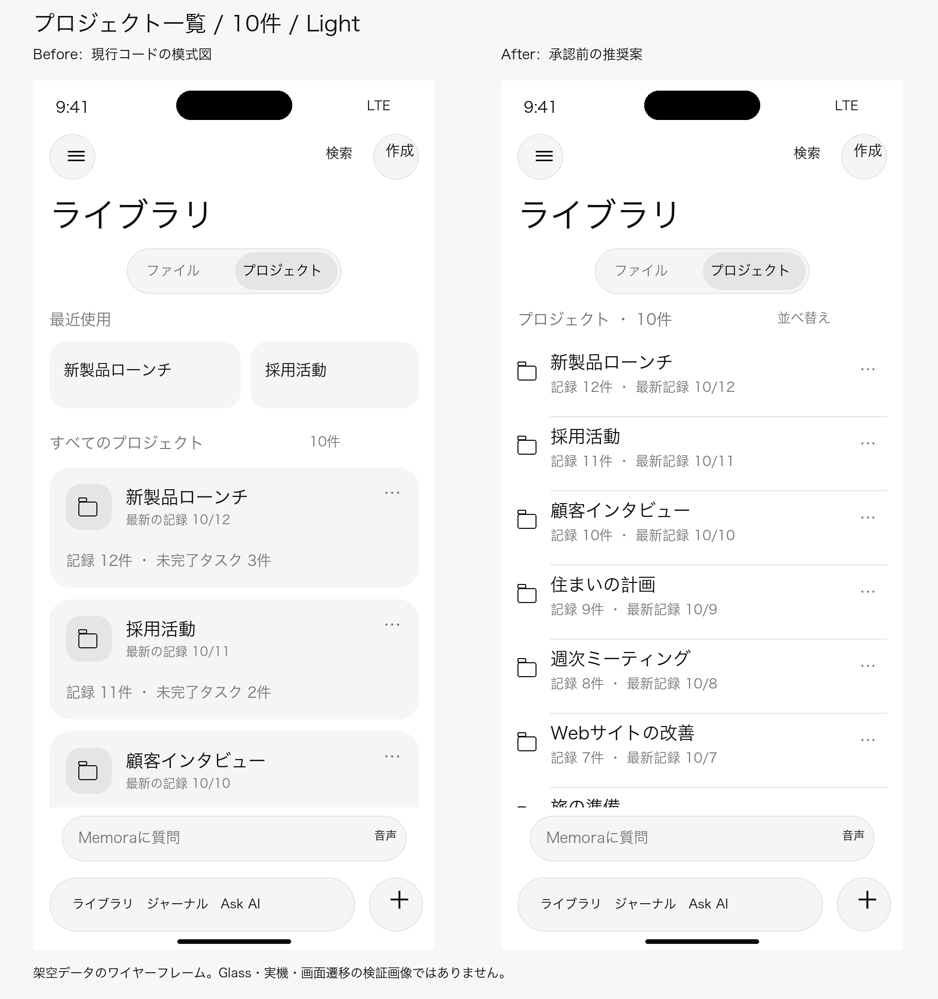

Memora — プロジェクトUX / Phase 1
本番UIは未変更。左は現行コードに基づく模式図、右は承認前の提案です。架空データを使用し、iOSのGlass描画・実機動作を再現した画像ではありません。

図の行高は提案値です。実装ではDynamic Type・長い日本語に合わせて伸長します。下部タブ、独立FAB、AI入力欄は位置を示すのみで、承認後も既存のネイティブ部品を再利用します。
一覧：名前を主役に、補助情報は2行目。詳細：次にやること → 最近の記録 → 関連資料。全件は同じ詳細画面内で展開する案です。
承認対象：①一覧のリスト化 ②詳細の情報順と操作整理 ③関連資料の閲覧導線（任意）。このページを開いてもアプリのデータやUIは変更されません。